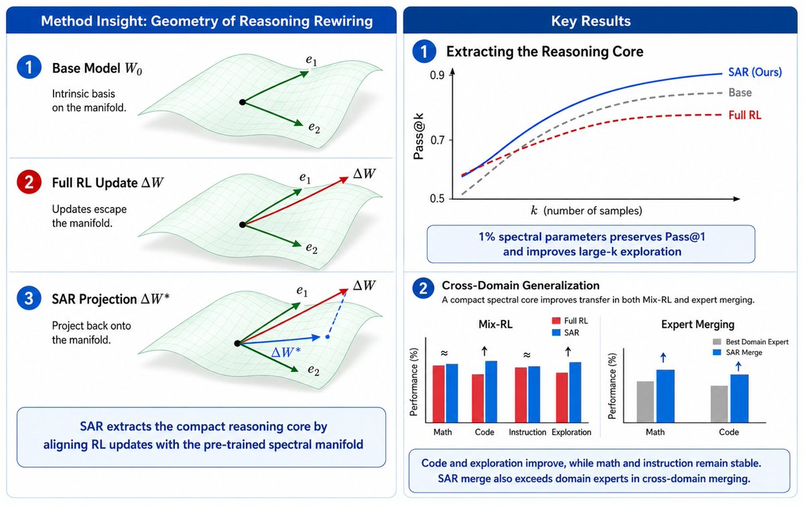
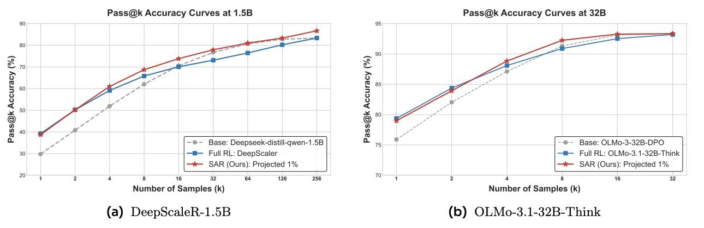
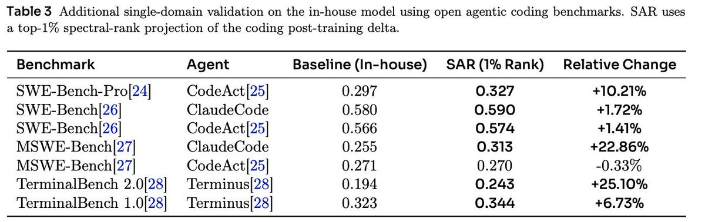
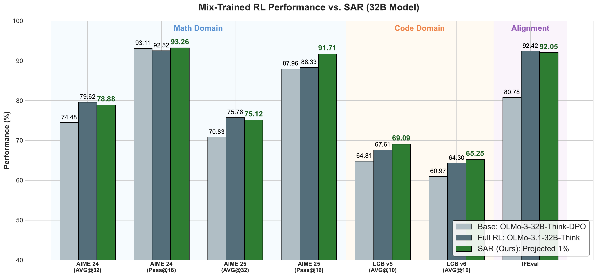
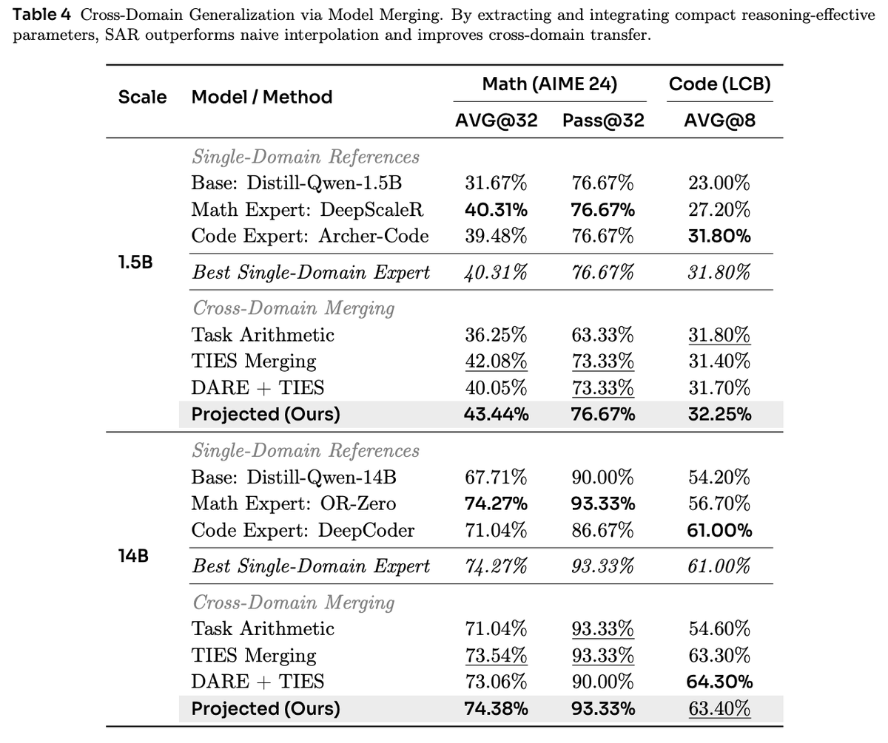

核心判断：这是一个很强的编辑接口，不是一份完整的机制证明
论文研究的是一个具体而重要的问题：给定同一架构、同一起点的基座模型 \(W_0\) 与 RL 后训练模型 \(W_{\mathrm{RL}}\)，稠密参数差 \(\Delta W=W_{\mathrm{RL}}-W_0\) 中，哪些部分真正承载了可测得的推理收益？能否在不重跑 RL、不重新收集 rollout、不改 reward 的前提下，只编辑这份更新，就让模型更容易探索、跨域迁移和合并？
作者给出的答案是 Subspace-Aligned Rewiring（SAR）：对每一层 attention / MLP 线性权重，取基座权重的前 \(k\) 个奇异方向，同时取 RL 增量的前 \(k\) 个低秩成分，再做双侧投影。最终得到的不是另一轮训练，而是一份基座对齐的低秩更新。
在若干 1.5B–32B 模型上，截断投影能保留 AIME 平均正确率；在两个模型族上，高 \(k\) 的 Pass@k 曲线优于 Full RL；在 Mix-RL 与专家合并中，多项跨域指标改善。
Full RL delta 中确实存在“有用更新 + 会压缩探索或制造干扰的残差”，基座对齐投影是一种有效正则化与兼容化操作。
单个 SVD 方向就是可命名技能、非对角元素就是逻辑推理电路、投影外分量在一般意义上都是噪声。这些是解释性假说。

SAR 的可信贡献是“基座对齐的低秩 post-hoc editing 可以改善 RL delta 的可用性”；“它找到了推理的几何本质”则需要更强的因果干预、语义定位、统计复现和跨模型证据。
原帖到底说了什么：主帖 + 1–10 全线程
用户给出的链接是线程第 7 条，主题是 32B 混合域 RL 的“净化”。把它单独阅读，很容易误以为 SAR 主要是一种多任务去冲突方法；完整线程实际上从 RL 更新的黑盒性出发，依次提出几何假说、算法、单域提取、探索恢复、代码评测、混合域净化和专家合并。
| 位置 | 主题 | 完整信息 | 证据位置 |
|---|---|---|---|
| 主帖 | 总问题 | RL 后训练有效，但稠密更新仍是黑盒；SAR 试图理解、净化、合并 RL 模型，列出紧凑性、探索、Mix-RL、合并四类结果。 | 论文摘要与主实验 |
| 1 / 10 | 动机 | Full RL 可能提高 Pass@1 却让 Pass@k 过早饱和；多域 RL 与权重合并会让数学、代码、指令遵循互相干扰。 | Figure 2、Figure 3、Table 4 |
| 2 / 10 | 几何视角 | 若 RL 主要是激活已有能力，RL 模型应在某个功能几何上靠近基座；作者把这个几何选为基座权重的 SVD 坐标。 | 核心假说，不是直接测量 |
| 3 / 10 | 谱重连 | 基座奇异向量被解释为已有知识/技能成分；RL 不更换整套基，而是改变这些成分之间的连接。 | Equation 6 + 示意例子 |
| 4 / 10 | SAR 算法 | 计算基座谱坐标，提取 RL delta 的低秩成分，投影并重建；无需新 RL、新数据或 reward redesign。 | Algorithm 1 |
| 5 / 10 | 单域提取 | 强推理模型上，低比例谱更新保留 Full RL 的 AIME 平均性能，并在高采样预算下超过基座和 Full RL。 | Table 1、Table 2、Figure 2 |
| 6 / 10 | Agentic coding | 内部大模型的代码 post-training delta 经 1% 投影后，在 7 个公开 agentic coding 配置中提升 6 个。 | Table 3；模型与 delta 未公开 |
| 7 / 10 | Mix-RL 净化 | 32B 模型同时训练数学、代码、指令遵循、聊天后，SAR 提升竞赛代码与数学探索，并让指令遵循基本稳定。 | Figure 3、Appendix Table 6 |
| 8 / 10 | 专家合并 | 不直接合并稠密 task delta，而把数学专家的谱重连加入代码专家；1.5B 与 14B 的平衡结果超过单域专家。 | Table 4、Appendix Table 7 |
| 9 / 10 | 生产规模 | 作者称内部生产模型上，SAR 合并在数学、代码、STEAM、谜题类评测取得最强内部推理表现。 | 只有文字陈述，无模型/表格/配置 |
| 10 / 10 | 总结 | RL delta 不必永远是黑盒稠密差分，而可以被分析、净化和组合。 | 对整篇论文的概括 |
问题背景：为什么 Pass@1 提升，反而可能让“多试几次”更没用
结果奖励 RL 会把概率质量推向能拿到奖励的轨迹。理想情况下，它既提高单次命中率，也扩大模型能搜索到的正确解集合；现实中，优化常常先提高最常见的成功模式，再让分布变窄。于是会出现一种并不矛盾的现象：
- Pass@1 上升：随机采一条时更容易答对，说明高概率区域更可靠。
- Pass@k 过早饱和：重复采样更多条时，新增样本高度同质，难以覆盖新的正确策略。
这里的 \(k\) 是对同一道题允许的采样次数。若总共生成 \(n\) 条，其中 \(c\) 条正确，代码评测传统上常用无偏估计：
AVG@32 更接近 32 次独立样本的平均正确率，回答“单次抽样有多可靠”；Pass@32 回答“32 次中至少一次正确的概率/覆盖率”。二者一起看，才能区分利用（exploitation）与有效探索（useful exploration）。随机但永远错误的多样性不算有效探索。
第二个问题：多能力不是简单相加
数学 RL、代码 RL、指令遵循 RL 可能从同一基座出发，却在参数空间形成符号、幅值和方向不兼容的 task delta。直接联合训练或相加，某个域的更新可能抵消另一个域的更新。Task Arithmetic、TIES、DARE 等方法从幅值、符号、稀疏性出发降低冲突；SAR 的不同点是：先问某个 delta 是否能在共同基座的谱坐标中表达，再进行合并。
机制拆解：SAR 实际做的是“双重截断 + 基座对齐”
对 Transformer 中的每个 attention 线性权重 \(W_q,W_k,W_v,W_o\) 与 MLP 线性权重 \(W_{\mathrm{gate}},W_{\mathrm{up}},W_{\mathrm{down}}\)，设基座权重为 \(W_0\in\mathbb{R}^{d_{\mathrm{out}}\times d_{\mathrm{in}}}\)，RL 后权重为 \(W_{\mathrm{RL}}\)。首先计算：
实现并不保留完整 \(U,V\)，而是选取基座前 \(k\) 个奇异方向 \(U_k,V_k\)，同时对 \(\Delta W\) 做低秩截断得到 \(\Delta W_k\)。随后：
1. 对齐起点
确认基座与 RL 模型同构，并计算逐层 \(\Delta W\)。
2. 基座 SVD
取 \(W_0\) 的前 \(k\) 个左/右奇异向量。
3. Delta 截断
从稠密更新提取前 \(k\) 个低秩成分。
4. 双侧投影
把更新写入基座的截断输入/输出方向。
5. 重建模型
只把投影更新加回基座并离线生成新权重。
所谓“重连”是什么意思
基座在自身 SVD 坐标中的中间映射是对角矩阵 \(\Sigma\)：第 \(i\) 个输入奇异方向 \(v_i\) 主要映射到对应的输出方向 \(u_i\)。加入一般的 \(M\) 后，前向传播可以写成：
- \(M_{ii}\) 是对原有通道的缩放：某个已有方向更强或更弱。
- \(M_{ij}, i\ne j\) 把输入方向 \(v_j\) 的信号路由到输出方向 \(u_i\)，形成跨成分耦合。
作者把非对角耦合解释为“把分散前提连接到共同结论”的推理机制。消融确实显示 off-diagonal-only 能恢复多数 Pass@1 收益，但这仍然只是层级线性代数与行为结果之间的结构类比；论文没有把某个 \(v_j\) 稳定标注为“边长”、把某个 \(u_i\) 标注为“正弦面积公式”，附录中的三角形例子是说明性示意，不是神经元语义定位实验。
SAR 不需要梯度更新、rollout、reward model 或新数据，因此是 training-free；但它需要保存基座与 RL 两套权重差、对多个大矩阵做 FP32 SVD、重建并保存新模型。论文未报告 32B 处理的 wall-clock、峰值显存/内存或 I/O 成本，所以它并不等于 compute-free。
方法坐标：SAR 与 LoRA、PiSSA、Pass@k RL、模型合并有什么不同
| 方法族 | 什么时候介入 | 操作对象 | 与 SAR 的关键区别 |
|---|---|---|---|
| LoRA / LoRA-XS | 训练时 | 预先限定的低秩可训练参数 | SAR 从已经完成的 Full RL delta 中事后提取，不要求原训练采用低秩参数化。 |
| PiSSA / 基座 SVD 适配 | 训练初始化时 | 基座主奇异分量 | 同样利用谱结构，但 SAR 的目标是对齐并过滤完成后的 RL 更新。 |
| Pass@k 优化 | RL 训练时 | reward / policy objective | 直接改变探索目标；SAR 不改训练目标，而从成品 delta 中寻找更适合高 \(k\) 的成分。 |
| Task Arithmetic | 训练后 | 多个稠密 task delta 的线性组合 | SAR 在组合前先将某个专家 delta 投影到共同基座坐标。 |
| TIES / DARE | 训练后 | 符号冲突、幅值、稀疏 task delta | 它们主要处理坐标级冲突；SAR 用基座的谱子空间定义“兼容方向”。 |
所以 SAR 不是“又一个 LoRA”，也不是“另一个加权平均”。它更像一个 post-training delta compiler：输入完整增量，输出一个以基座为参考系、可以继续执行压缩、过滤和合并的中间表示。
证据一：紧凑性成立，但高度依赖起点
论文在 AIME 2024/2025 上做 rank sweep，选择能在评测方差内保留 Full RL 表现的最小谱 rank。关键结果如下：
| 模型 | 起点性质 | SAR rank | Full RL → SAR（AIME 24 AVG@32） | 重要含义 |
|---|---|---|---|---|
| DeepScaleR 1.5B | 蒸馏推理模型再 RL | 1% | 40.31 → 40.21 | 低 rank 足以保留平均性能；M 报告为总参数 0.58%。 |
| POLARIS 4B | 强推理 post-training recipe | 10% | 78.75 → 78.02 | 需要明显更宽子空间；M 已占总参数 7.75%。 |
| OLMo-3.1-32B-Think | DPO thinking 模型再 Mix-RL | 1% | 79.56 → 78.88 | 平均正确率略降，Pass@32 保持。 |
| OLMo-3.1-7B-RL-Zero-Math | 从通用 Base 直接做数学 RL | 30% | 50.21 → 49.02 | 从弱起点“获得”能力时，紧凑投影明显更难。 |
这组结果其实比“<1% 参数保留 RL”更有价值：需要的 rank 本身就是一种 projection compatibility 指标。当起点已经拥有推理或领域接口，RL 更像重组已有结构；从通用 base 直接获得数学/代码行为时，更新必须更广，SAR 的“elicitation”假设变弱。
证据二：高 \(k\) 探索改善，但核心增益只有一道 AIME 题

DeepScaleR 在 AIME 2024 的 Coverage@256 从 Full RL 的 25 / 30 变为 SAR 的 26 / 30。这个结果方向上很有意思：被投影掉的部分可能让策略分布过于集中；但统计量很小，实际增益是一道题，且论文没有报告跨随机种子、bootstrap 区间或第二套大样本数学集。因此，最稳妥表述是“出现了可重复检查的高 \(k\) 改善信号”，而不是“探索退化已经被普遍解决”。
证据三：Agentic coding 的绝对收益可观，但不可独立复现

把七项原始分数相减，平均绝对提升约 2.5 个百分点；把表中“Relative Change”列直接求平均，则约为 9.67%。论文正文称“+2.52% improvement on average”，更接近平均绝对分数变化，而不是表头所说的平均相对变化。这个措辞需要澄清，否则容易把 percentage points 与 relative percent 混在一起。
更大的边界是：benchmark 是公开的，但内部基座、代码 RL delta、运行 harness 与 SAR 处理后的模型没有公开，因此外部研究者无法判断提升来自谱投影、模型版本差、agent 配置差还是运行方差。它是工程可行性证据，不是可复现实验。
证据四：你给出的 7 / 10——32B Mix-RL 的“净化”

| 指标 | Base | Full Mix-RL | SAR 1% | 相对 Full RL |
|---|---|---|---|---|
| AIME 24 AVG@32 | 74.48 | 79.62 | 78.88 | -0.74 pp |
| AIME 24 Pass@16 | 93.11 | 92.52 | 93.26 | +0.74 pp |
| AIME 25 AVG@32 | 70.83 | 75.76 | 75.12 | -0.64 pp |
| AIME 25 Pass@16 | 87.96 | 88.33 | 91.71 | +3.38 pp |
| LiveCodeBench v5 AVG@10 | 64.81 | 67.61 | 69.09 | +1.48 pp |
| LiveCodeBench v6 AVG@10 | 60.97 | 64.30 | 65.25 | +0.95 pp |
| IFEval | 80.78 | 92.42 | 92.05 | -0.37 pp |
这支持“投影后 trade-off 更好”，但不能直接证明被删除方向就是“域干扰噪声”。更保守的解释是：SAR 在作者选择的 rank 下形成一种强正则化，使 held-out code 与高 \(k\) coverage 受益，同时牺牲少量平均数学分数和 IFEval。要证明“净化”，还需要定位被删方向与训练域、梯度冲突、输出分布变化之间的因果关系。
证据五：合并超过专家，重点在 Pareto 平衡而不是全面统治

- 1.5B：AIME AVG@32 43.44，高于最佳数学专家 40.31；LCB AVG@8 32.25，高于代码专家 31.80；AIME Pass@32 持平 76.67。
- 14B：AIME AVG@32 74.38 对 74.27，仅高 0.11 个百分点，未给方差；LCB 63.40 对代码专家 61.00，但 DARE+TIES 达到 64.30。
因此“超过最佳单域专家”在表格字面上成立，但最有说服力的是 同时守住数学并获得代码能力，而不是每个单指标都显著领先所有方法。SAR 更像改善 Pareto 前沿的合并策略。
为什么不能把结果简单归因于“低秩压缩”
论文附录补了几组重要对照，这让工作明显强于只展示主表的谱投影故事。
| 对照 | 它排除了什么 | 关键结果 | 仍然留下的问题 |
|---|---|---|---|
| No projection | 同样保留 \(\Delta W\) 的 top-\(k\)，但不对齐基座 SVD | AIME 25 Pass@32 86.67，SAR 93.33；LCB v5 68.24，SAR 69.09。 | 支持“对齐有用”，但未报告多 seed 方差。 |
| Random projection | 任意低维子空间是否同样有效 | Pass@1 36.67，低于 SAR 40.21；Pass@32 80.00，反而高于 SAR 76.67。 | 不同指标各有胜负，不能只说 SAR 全面更优。 |
| Diagonal only | 只缩放已有通道是否足够 | Pass@1 30.73，基本回到 Base 31.67。 | 说明单纯 rescaling 不够。 |
| Off-diagonal only | 跨成分耦合是否承载主要信号 | Pass@1 38.54，恢复大部分 Full RL 收益；Pass@32 73.33。 | 支持“重连重要”，但不能给耦合赋予具体语义。 |
| Attention / MLP only | 信号是否只集中在单类模块 | 附录称二者单独投影都不及完整 SAR。 | 未给完整数表和逐层贡献。 |
这些控制共同支持一个更窄但扎实的结论：低秩是必要解释的一部分，基座谱对齐提供了额外价值，且非对角耦合承载了大量行为收益。它们还不足以证明 SVD basis 是唯一正确的功能坐标；尚缺 CKA/Fisher/activation-weighted basis、梯度子空间、Hessian eigenspace 等更强对照。
术语与指标：避免把相似词混成一件事
边界与疑点：哪些地方最容易被宣传语掩盖
1. “谱流形”在数学上主要靠 top-k 截断才产生作用
论文先以完整秩 \(r\) 写 \(P_U=UU^\top,\ P_V=VV^\top\)，又在算法里改用 top-\(k\)。若方阵满秩且使用完整 \(U,V\)，则 \(UU^\top=I,\ VV^\top=I\)，所谓投影就是恒等映射，\(\Delta W^*=\Delta W\)。真正的过滤来自 \(U_k,V_k\) 与 \(\Delta W_k\) 的截断。因此更精确的名字是“基座主谱方向对齐的双侧低秩投影”，而不是已经测得的非线性功能流形。
2. “奇异向量 = 原子技能”是解释假说
SVD 方向是单层矩阵的线性代数对象。奇异值接近时，对应向量可在退化子空间内旋转；符号也不唯一。模型功能还依赖 activation distribution、非线性、残差路径和跨层组合。论文没有做 activation patching、causal tracing、语义 probe 或跨 checkpoint basis stability，因此不能把某个方向稳定命名为一项技能。
3. Table 2 的参数记账缺少可复算桥梁
以公开 DeepScaleR 1.5B 配置为例，按每层矩阵保留 1% rank，低秩双因子参数量约 16.0M，与表中的 \(\Delta W^*=16.1\mathrm{M}\) 一致；但按算法所写 \(M\in\mathbb{R}^{k\times k}\) 汇总，数量级远小于表中 9.0M。v1 没有解释 9.0M 到底是否包含单侧 basis、系数因子或另一种存储形式，也未给逐层 rank 舍入规则。因而“0.58% intrinsic rewiring parameters”目前不能仅凭正文独立复算。
4. 紧凑表示不等于部署时只需要 0.58% 模型
如果离线重建 \(W_{\mathrm{SAR}}\)，部署仍是一整套 1.5B/32B 权重；若只分发 \(M\)，运行时还需要相同基座以及对应 basis/factor，并承担额外乘法或预合并成本。论文讨论的是 相对基座的更新表示，没有展示模型整体压缩、显存下降或推理加速。
5. Rank 是在目标评测上 sweep 出来的
论文选择“在评测方差内保留 Full RL 表现的最小 rank”，但未说明 rank selection 与最终报告是否使用独立 validation/test split。AIME 只有 30 题，1 个问题就对应约 3.33 个百分点的直接覆盖差。没有多 seed 与置信区间时，1.5B 的 26 / 30 对 25 / 30、14B 合并的 +0.11 pp 都应视为候选信号。
6. “Purification”是功能性命名，不是噪声鉴定
删掉一些方向后 held-out 指标变好，说明它们对这些指标不利；并不说明这些方向在所有分布上都是噪声。它们可能承载风格、校准、安全、长尾任务或训练域专用能力。论文没有做完整能力回归、安全评测、分布外评测和 forgetting audit。
7. 公开性与复现仍不足
截至 arXiv v1，论文条目、正文和源文件没有给出 SAR 官方代码、处理后的模型或完整评测脚本；以论文标题和编号检索也未发现对应官方仓库或模型发布。公开模型上的主表可以被未来实现复核，但内部 agentic coding 与生产规模结果暂时只能视为作者报告。
（1）JustRL 训练超过 4000 step 后，投影只恢复约 43% AIME 24，低于最终 RL 约 52%；（2）从 base 直接做代码 RL 时，格式、I/O 协议、工具接口等新行为未必已存在于基座谱空间，先做 code SFT 再 RL 更兼容；（3）外部 critic 与稠密 token reward 可能推动更广泛的行为重写，超出紧凑 outcome-reward elicitation。
独立 insight：这项工作真正打开了什么
Insight 1：SAR 最有价值的产物不是模型，而是一条“投影兼容曲线”
把 rank \(k\) 从小到大扫描，画出各域性能 \(S_d(k)\)，可以得到一次 post-training update 的结构指纹：
若很小的 \(k\) 就让 \(C_d(k)\approx 1\)，RL 更像在重组参考模型已有能力；若曲线迟迟不上升，说明训练可能在学习新的协议、领域知识或广泛行为。相比笼统争论“RL 到底创造能力还是激活能力”，这是一种可操作、可分层、可跨 checkpoint 比较的诊断。
Insight 2：参考 checkpoint 决定什么被叫作“已有能力”
同一个 code RL delta，投到通用 Base 的谱空间可能不兼容，投到 Code-SFT 的谱空间却能恢复 Full RL。于是“elicitation vs acquisition”并不是 delta 的固有标签，而是三元关系：
这意味着选择参考点本身就是建模决策。最好的参考不一定是最早的 pretrained base，而可能是已经具备领域语言与接口、尚未发生奖励收缩的 SFT/DPO checkpoint。
Insight 3：探索塌缩可能是可编辑的参数几何，不必只从 reward 端修
传统解决路径是重写 reward、增加 entropy bonus、直接优化 Pass@k 或重新收集 rollout。SAR 提示另一种可能：训练完成后，模型内已经同时包含高 Pass@1 的有效信号和压窄可达解集合的残差；过滤后者可以恢复 sampling frontier。这个判断目前只被行为曲线间接支持，下一步应同步测 token entropy、trajectory clustering、答案模式覆盖、校准与 per-problem likelihood，建立参数投影到探索分布的因果链。
Insight 4：模型合并的核心不是“平均得更聪明”，而是先建立共同参考系
两个专家的 raw delta 即使都从同一 base 出发，也可能含有大量域专用漂移。SAR 的启发是先提取可在共同 base 中表达的部分，再合并。对于不同 base 或不同中间 checkpoint 的专家，仅靠同名参数相加不够；需要先做 basis matching、符号/退化子空间对齐，甚至使用 activation-weighted alignment。由此看，未来的模型合并更像“坐标配准 + 兼容性筛选”，而不是权重插值。
Insight 5：最该被验证的不是更多 benchmark，而是“被丢掉的方向到底是什么”
如果 \(\Delta W_\perp\) 真是探索抑制与域干扰来源，那么它应当在训练轨迹、输出分布和梯度冲突上留下可预测信号：随 reward overoptimization 增长、与熵下降相关、在不同域梯度间呈更强负余弦、回注后重新造成 Pass@k 饱和。做逐层/逐秩回注、按训练 step 追踪、跨 seed 复现，比再增加一组最终分数更能把“漂亮几何故事”推进为机制研究。
这是一个值得认真跟进的强实验工作：方法简单、后处理价值高、对照方向正确，而且把 extraction、purification、merging 统一到同一接口。它的主要短板不是效果弱，而是理论叙事走得比证据更远、统计和参数记账不够透明、复现资产尚未公开。把 SAR 当作 delta filtering / compatibility diagnostic 很可靠；把它当作“推理神经机制已被找到”则为时过早。
如果要在真实 post-training 流程中尝试 SAR
- 保留正确参考点：保存 Base、SFT、DPO、不同 RL step；不要只留下最终模型。参考点不同，投影兼容性会完全不同。
- 先做 held-out rank sweep：在验证集选择 rank，在独立测试集报告；至少覆盖 AVG@1、Pass@k、领域回归、安全与 OOD。
- 同时保留 no-projection 对照：同样的低秩预算直接加回 base，才能区分低秩压缩与谱对齐的贡献。
- 不要只看平均分：记录每题 coverage、轨迹聚类、答案熵、正确解类型和 sampling cost，确认高 \(k\) 提升来自新可达解而非估计噪声。
- 逐模块审计：attention、MLP、层深、对角/非对角分别回注；寻找最小有效路径，而不是默认所有线性层同一 rank。
- 模型合并先检查同源性：架构、tokenizer、base checkpoint 必须一致；不同参考系需要额外的 basis alignment。
- 部署前算真实成本：区分“更新表示大小”“最终 checkpoint 大小”“在线额外 FLOPs”；测 FP32 SVD 时间、峰值内存、重建误差和低精度敏感性。
- 把被删部分也当资产：保存 \(\Delta W_\perp\)，做可逆回注与回归定位。只有知道删掉了什么，才有资格称其为 purification。
证据边界与资料索引
本文核对了作者主线程的主帖与 1–10 条回复、arXiv v1 的 21 页正文和附录、公开 TeX 源文件、帖内五张原始图片，以及 OLMo / DeepScaleR 的公开模型信息。公开论文表格中的数字按原始口径转录；“噪声”“原子技能”“功能流形”等机制性表述均按假说处理。内部模型、内部生产评测、SAR 官方实现与处理后 checkpoint 无公开材料可独立复核；平台线程和公开资产后续可能变化。
- Zhilong Zhang：SAR 主线程起点
- 用户提供的第 7 条：Mix-RL Purification
- Zhang et al., Spectral Rewiring for Exploration, Purification, and Model Merging, arXiv:2607.03065v1
- Ai2：Olmo 3.1 32B Think 模型卡
- Ai2：Olmo 3 模型流与 3.1 更新说明
- Agentica：DeepScaleR 1.5B Preview 模型卡
- Task Arithmetic：Editing Models with Task Arithmetic
- TIES-Merging：Resolving Interference When Merging Models
- PiSSA：Principal Singular Values and Singular Vectors Adaptation
- LoRA：Low-Rank Adaptation of Large Language Models